Bahar Ağayeva
İmtahan: Испытательный экзамен №3 По выпускным предметам (XI класс) (2025-12-28)
Yekun nəticə: 230.21 / Maksimum: 300
Cavab kartının qrafik təsviri:
Русский язык (Maksimum: 100)
Doğru cavabların sayı: 16Yanlış cavabların sayı: 13Nəticə: 45.8- ▶
Укажите деепричастие совершенного вида.
Verilmiş Cavab:прочтя
Doğru cavab:прочтя
- ▶
Укажите двувидовой глагол, состоящий из 3 морфем.
Verilmiş Cavab:решить
Doğru cavab:казнить
- ▶
И на первый, и на второй слог может падать ударение в слове?
Verilmiş Cavab:петля
Doğru cavab:петля
Укажите простое числительное.
Verilmiş Cavab:девяносто
Doğru cavab:шестнадцать
- Verilmiş Cavab:
2, 5, 6
Doğru cavab:2, 3, 4
- ▶
Какое из существительных образовано приставочно-суффиксальным способом?
Verilmiş Cavab:подсвечник
Doğru cavab:подсвечник
- ▶
Укажите сочинительные союзы.
1. чтобы
2. несмотря на то что
3. не только, но и
4. так как
5. как, так и
6. однакоVerilmiş Cavab:3, 5, 6
Doğru cavab:3, 5, 6
- ▶
Решите кластер, исключив глаголы, от которых нельзя образовать страдательные причастия настоящего времени.
![]() Verilmiş Cavab:
Verilmiş Cavab:2, 3
Doğru cavab:3, 4
- ▶
В каком слове неверно поставлено ударение?
Verilmiş Cavab:укра́инский
Doğru cavab:укра́инский
- Verilmiş Cavab:
2, 3, 4
Doğru cavab:2, 3, 4
Ответьте на нижеследующие вопросы, исходя из текста.
Весна
1. В тот год, как я вступил в университет, праздники были как-то поздно в апреле, так что экзамены были назначены на Фомину неделю. 2. Я должен был истово готовиться. 3. Погода опосля мокрого снега уже дня три стояла тихая, тёплая и ясная. 4. На улицах не видно было клочка снега, грязное тесто заменилось мокрой мостовой и быстрыми ручьями. 5. С крыш уже на солнце стаивали последние капели, в палисаднике на деревьях надувались почки, на дворе была сухая дорожка к конюшне мимо замёрзлой кучи навоза, и около крыльца между камнями зеленела мшистая травка. 6. Был тот особенный период весны, который сильнее всего действует на душу: яркое, на всём блестящее, но не жаркое солнце, ручьи и проталинки, пахучая свежесть в воздухе и нежно-голубое небо с длинными прозрачными тучками. 7. Не знаю почему, но мне кажется, что в большом городе ещё ощутимее и сильнее на душу влияние этого первого периода рождения весны, — меньше видишь, но больше предчувствуешь.
8. Я стоял около окна, в которое утреннее солнце сквозь двойные рамы бросало пыльные лучи на пол моей невыносимо классной надоевшей мне комнаты, и решал на чёрной доске какое-то длинное алгебраическое уравнение.
9. В одной руке я держал изорванную мягкую "Алгебру" Франкера, в другой — маленький кусок мела, которым испачкал уже обе руки, лицо и локти полуфрачка. 10. Николай в фартуке, с засученными рукавами, отбивал клещами замазку и отгибал гвозди окна, которое отворялось в палисадник. 11. Его занятие и стук, который он производил, развлекали моё внимание. 12. … я был в весьма дурном, недовольном расположении духа. 13. … . 14. Я сделал ошибку в начале вычисления, так что надо было всё начинать сначала; мел я два раза уронил, чувствовал, что лицо и руки мои испачканы, губка где-то пропала, стук, который производил Николай, как-то больно потрясал мои нервы. 15. Мне хотелось рассердиться и поворчать. 16. Я бросил мел, "Алгебру" и стал ходить по комнате.- ▶
Синонимичным выражению "потрясал мои нервы" является слово:
Verilmiş Cavab:раздражал
Doğru cavab:раздражал
- ▶
Какое слово связывает предложение №12 с предыдущим?
Verilmiş Cavab:Наконец
Doğru cavab:Притом
- ▶
Какие способы использованы для разъяснения лексического значения слов соответственно?
1. мостовая – вымощенная или покрытая асфальтом проезжая часть улицы
2. палисадник – цветникVerilmiş Cavab:1 – раскрытие значения частей слова; 2 – подбор синонимов
Doğru cavab:1 – описание предмета, указание его признаков; 2 – подбор синонимов
- ▶
Какое предложение должно стоять в тексте под номером №13?
Verilmiş Cavab:Мне казалось, что работа идёт удивительно легко.
Doğru cavab:Всё как-то мне не удавалось.
- ▶
Какой пословицей может быть выражена основная мысль третьего абзаца текста?
Verilmiş Cavab:Без хорошего труда нет плода.
Doğru cavab:Без хорошего труда нет плода.
- ▶
В предложениях №7-9 найдите речевую ошибку и выпишите предложение в исправленном виде.
Verilmiş Cavab:Meyar:Oтвет: №8. …бросало пыльные лучи на пол моей невыносимо надоевшей мне классной комнаты…
Критерии:
1 балл - если ошибка найдена и исправлена верно; 1/2 балла - если ошибка найдена, но не исправлена;
- если ошибка найдена и исправлена неверно;0 баллов - если ответ отсутствует или полностью неверен Qiymətləndirmə: 0 - ▶
Выпишите из первого абзаца 2 слова, не относящиеся к общеупотребительной лексике, и объясните их значение согласно контексту.
Verilmiş Cavab:
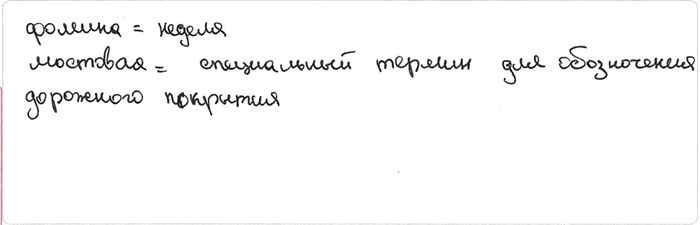Meyar:Oтвет:
1. истово – усердно, старательно, серьёзно;
2. опосля – послеКритерии:
1 балл - если правильно выписаны оба слова и верно объяснены их значения согласно контексту; 1/2 балла - если наряду с полным верным ответом допущена 1 ошибка;
- если верно выписано 1 слово и правильно раскрыто его значение, а 2 слово не выписано или выписано неверно;
- если верно выписаны 2 слова, но значение написано неверно или вообще не написано;0 баллов во всех остальных случаях Qiymətləndirmə: 0 - ▶
Ответьте на вопрос (своими словами) "Почему герой текста был в дурном расположении духа?", указав 2 причины.
Verilmiş Cavab:
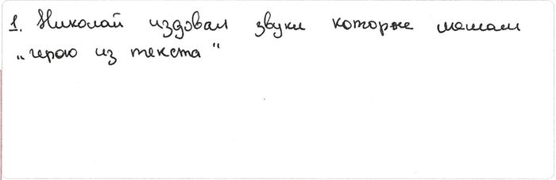Meyar:Oтвет: Герою не удавалось произвести какие-то вычисления. Тому были 2 причины: 1 – занятия Николая отвлекали внимание; 2 – нервы были на пределе
Критерии:
1 балл - если ученик дал ответ своими словами, указав 2 причины; 1/2 балла - если ученик дал ответ своими словами, указав 1 причину; 0 баллов - если ответ не соответствует вопросу;
- если ответ переписан из текстаQiymətləndirmə: 1/2 - ▶
Определите предложения, в которых можно использовать фразеологизмы (по 2 абзацу). Выпишите эти предложения, использовав в них данные фразеологизмы.
![]() Verilmiş Cavab:
Verilmiş Cavab:
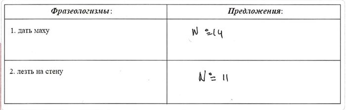Meyar:Oтвет:
14. Я дал маху (сделал ошибку) в начале вычисления, так что надо было всё начинать сначала…
15. Мне хотелось лезть на стену (рассердиться) и поворчать.Критерии:
1 балл - если правильно подобраны оба предложения, фразеологизмы в них верно употреблены (при отсутствии неверных ответов); 1/2 балла - если при полном верном ответе имеется 1 неверный ответ;
- если правильно подобрано одно предложение, фразеологизм в нём употреблён верно, а второе предложение выписано неверно;0 баллов - во всех остальных случаях Qiymətləndirmə: 0 - Verilmiş Cavab:
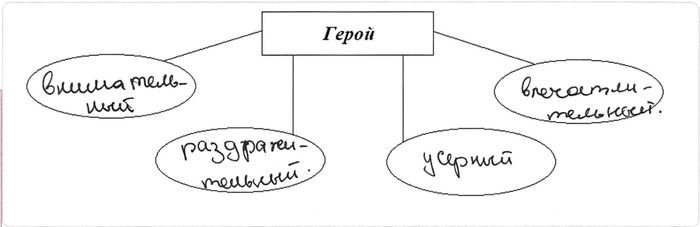Meyar:Oтвет:
1. негодующий;
2. рассеянный;
3. неаккуратный;
4. раздражённыйКритерии:
1 балл - если верно указаны 4 характеристики (2 повторяющихся ответа (синонима) засчитываются как 1 верный);
- если верно указаны 3 характеристики (при отсутствии неверных ответов; 2 повторяющихся ответа (синонима) засчитываются как 1 верный);
- если наряду с 4-мя верными характеристиками допущена 1 ошибка;2/3 балла - если указаны 3 верные характеристики и 1 неверная;
- если указаны 2 верные характеристики (при отсутствии неверных ответов);1/3 балла - если указаны 2 верные характеристики и 1 неверная;
- если верно указана только 1 характеристика (при отсутствии неверных ответов);0 баллов - если количество верных ответов равно количеству неверных;
- если неправильных ответов больше, чем правильных;
- во всех остальных случаяхQiymətləndirmə: 0 Ответьте на нижеследующие вопросы, исходя из текста.
Тайна грамматического рода
1. Интересно, почему одни слова мужского рода, а другие – женского и среднего? 2. Почему в одних языках (русский, немецкий) три рода, в других (французский) – два, в третьих (английский) фактически нет ни одного? 3. Легко понять, что слова "жена", "мать", "сестра" или "муж", "отец", "брат" распределяются по родам в зависимости от пола. 4. Но почему "весна", "зима", "осень" – женского рода, а "лето" – среднего? 5) Почему слово "дитя" – среднего рода, а "путь" – мужского рода? 6. Род тысяч слов логически необъясним. 7. Не меньше путаницы и в других языках. 8. В немецком, например, даже слова "женщина" (das Weib) и "девочка" (dasMadchen) – среднего рода. 9. Наблюдая эти факты, учёные задались вопросом: если слова распределяются по родам так нелогично и непоследовательно, то какой смысл имеет категория грамматического рода? 10. И ещё: если некоторые языки обходятся без этой категории, то зачем она вообще нужна, как она образовалась? 11. Чтобы ответить на эти вопросы, учёные исследовали самые древние из известных языков. 12. Выдающийся французский лингвист конца XIX – начала XX века Антуан Мейе обратил внимание на тот факт, что в древних родственных языках стран Европы, Индии, Ирана (индоевропейские слова разделяются на две основные группы: в зависимости от того, рассматриваются предметы и явления как неодушевлённые или как одушевлённые. 13. Один и тот же предмет может быть назван то словом класса неодушевлённого (средний род), то словом класса одушевлённого (мужской или женский род). 14. Заметим, что в тех странах, где господствовало материалистическое миропонимание, как, например, в Древней Греции, названия воды, огня и т. п. оказываются неодушевлёнными (среднего рода), у одушевлённых слов род определяется согласно полу: у тех же народов, где сильны были религиозные взгляды на мир, как в Индии или Древнем Риме, одушевлялось, обожествлялось все то, перед чем человек бессилен, что играло большую роль в его жизни. 15. такие языки характеризуются также противопоставлением женского рода мужскому ("огонь – вода", "день – ночь", "земля – небо"). 16. Таким образом, категория рода является пережитком старых религиозных воззрений. 17. Выдающийся лингвист академик В. В. Виноградов писал: "У подавляющего большинства имён существительных, у тех, которые не обозначают лиц и животных, форма рода нам представляется немотивированной, бессодержательной. 18. Она кажется пережитком давних эпох, когда в делении имён на грамматические классы отражалась свойственная той стадии мышления классификация вещей, лиц и явлений действительности". 19. …
(По В. В. Одинцову)
- ▶
Каким предложением логичнее завершить текст?
Verilmiş Cavab:Следовательно, категория рода требует дальнейшего изучения.
Doğru cavab:Следовательно, категория рода требует дальнейшего изучения.
- ▶
В прямом и переносном значении соответственно в тексте употреблены выражения:
1. в других языках
2. категория рода
3. миропонимание господствовало
4. языки обходятся
5. женский род
6. взгляды сильныVerilmiş Cavab:3, 5, 6; 1, 2, 4
Doğru cavab:1, 2, 5; 3, 4, 6
- ▶
Характеристики "понятие, выражающее наиболее общие свойства и связи явлений действительности" и "специалист, занимающийся научной деятельностью в области языкознания" соответственно в тексте относятся к словам:
Verilmiş Cavab:категория, лингвист
Doğru cavab:категория, лингвист
- ▶
С какого предложения начинается основная часть текста?
Verilmiş Cavab:№6
Doğru cavab:№3
- ▶
Какое утверждение противоречит содержанию текста?
Verilmiş Cavab:Названия времён года в русском языке относят к женскому роду.
Doğru cavab:Названия времён года в русском языке относят к женскому роду.
- Verilmiş Cavab:
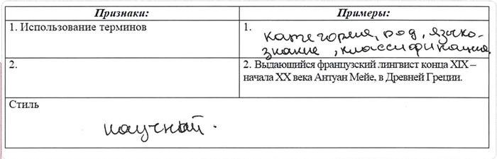Meyar:Oтвет:
Признаки:
Примеры:
1. Использование терминов 1. категория, лингвист 2. точность информации 2. Выдающийся французский лингвист конца
XIX – начала XX века Антуан Мейе, в Древней Греции.Стиль научный Критерии:
1 балл - если верно указаны стиль текста и отсутствующие пример и признак; 1/2 балла - если верно указаны стиль текста и отсутствующий пример или признак (при отсутствии неверных ответов);
- если верно указаны стиль текста и отсутствующие пример и признак (при наличии неверного ответа);0 баллов - если ответ отсутствует;
- если указан только признак данного стиля;
- если приведён только пример из текста;
- если указан только стиль текста;
- во всех остальных случаяхQiymətləndirmə: 1/2 - ▶
Используя слова из текста, заполните диаграмму Эйлера-Венна, сравнив особенности распределения слов по родам в русском и немецком языках.
![]() Verilmiş Cavab:
Verilmiş Cavab:
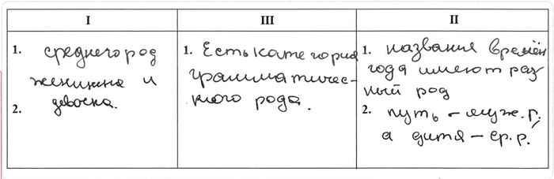Meyar:Oтвет:
I
III
II
1. слово женщина – среднего рода;
2. слово девочка – среднего рода1. имеют три рода 1. слово дитя – среднего рода;
2. слово путь – мужского рода или
весна, зима, осень – женского рода, лето – среднегоКритерии:
1 балл - если в средней части 1 правильный ответ и в 1-й и 3-й частях есть по 2 правильных ответа (при отсутствии неверных ответов);
- если помимо всех правильных ответов имеется 1 неправильный;2/3 балла - если из 5 требуемых ответов верно написаны 4 (максимальное количество допускаемых ошибок 1);
- если из 5 требуемых ответов верно написаны 3 (при отсутствии неверных ответов);1/3 балла - если из 5 требуемых ответов верно написаны 4 (максимальное количество допускаемых ошибок 2);
- если из 5 требуемых ответов верно написаны 3 (максимальное количество допускаемых ошибок 2);
- если из 5 требуемых ответов верно написаны 2 (при отсутствии неверных ответов);0 баллов - если из 5 требуемых ответов верно написаны 2 (при наличии 1 и более ошибок);
- если из 5 требуемых ответов верно написаны 3 только в одной части, а в других допущены 2 и более ошибок;
- если количество верных ответов равно количеству неверных;
- если неправильных ответов больше, чем правильных;
- если ответ не соответствует вопросу или диаграмма не заполнена;
- во всех остальных случаяхQiymətləndirmə: 2/3 - ▶
Ознакомьтесь с выражением "У языка своя логика, которую разуму не всегда понять". Какую мысль из текста подтверждает данное выражение? Аргументируйте свой ответ примером из текста.
Мысль (своими словами): ________
Аргумент (примерами из текста): ________Verilmiş Cavab:
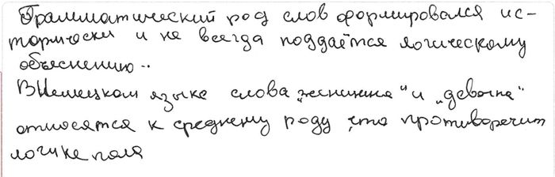Meyar:Oтвет:
Мысль: Невозможно полностью объяснить язык через логику, пытаясь это делать, человек часто сталкивается с исключениями из правил.
Аргумент: Но почему весна, зима, осень – женского рода, а лето – среднего? Почему слово дитя – среднего рода, а путь – мужского рода? Род тысяч слов логически необъясним. (Предложения № 4-6).Критерии:
1 балл - если ученик верно сформулировал мысль и аргументировал её; 1/2 балла - если ученик верно сформулировал мысль, но не аргументировал её;
- если верно подобран аргумент, но мысль сформулирована неверно;
- если при ответе, соответствующему эталону, имеется 1 неверный аргумент;0 баллов - во всех остальных случаях Qiymətləndirmə: 1 - ▶
Раскройте значение подчёркнутого слова по тексту. Составьте предложение с этим словом, употребив его в другом значении.
Verilmiş Cavab:
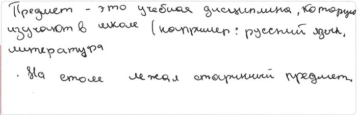Meyar:Oтвет: Предмет – всякое материальное явление, вещь. Математика является моим самым любимым предметом в школе.
Критерии:
1 балл - если раскрыто значение подчёркнутого слова по тексту, а также слово использовано в предложении в другом значении;
- если представлен другой ответ, по смыслу аналогичный правильному;1/2 балла - если раскрыто только значение подчёркнутого слова, но слово не использовано в предложении в другом значении;
- если слово использовано в предложении в другом значении, но не раскрыто его значение по тексту;0 баллов - во всех остальных случаях Qiymətləndirmə: 0 - Verilmiş Cavab:
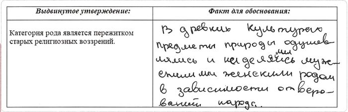Meyar:Oтвет:
Выдвинутое утверждение:
Факт для обоснования:
Категория рода является пережитком старых
религиозных воззрений.В тех странах, где был материализм (например, в Древней Греции) названия воды, огня и т. п. неодушевлённые (среднего рода), а у одушевлённых слов род определяется по полу.
У религиозных народов (в Индии или Древнем Риме) одушевлялось все, перед чем человек бессилен.Критерии:
1 балл - если ответ верный;
- если представлен другой ответ, по смыслу аналогичный правильному;0 баллов - если ответ неверен или отсутствует Qiymətləndirmə: 1
Математика (Maksimum: 100)
Doğru cavabların sayı: 15Yanlış cavabların sayı: 6Nəticə: 50.0Если уравнение имеет бесконечное число решений, найдите сумму параметров и .
Verilmiş Cavab:Doğru cavab:Найдите длину диагонали равнобокой трапеции, меньшее основание которой , боковая сторона и острый угол равен .
Verilmiş Cavab:Doğru cavab:Упростите выражение .
Verilmiş Cavab:Doğru cavab:, , и . Найдите .
![]() Verilmiş Cavab:Doğru cavab:
Verilmiş Cavab:Doğru cavab:Какое из следующих утверждений неверно для графика функции ?
Verilmiş Cavab:Пересекает ось ординат в точке .
Doğru cavab:Пересекает ось ординат в точке .
Найдите значение выражения .
Verilmiş Cavab:3
Doğru cavab:3
Упростите выражение , если .
Verilmiş Cavab:Doğru cavab:Найдите число целых чисел , удовлетворяющих неравенству .
Verilmiş Cavab:3
Doğru cavab:3
Прямая касается в точке окружности с центром в точке . Найдите градусную меру угла , если .
![]() Verilmiş Cavab:Doğru cavab:
Verilmiş Cavab:Doğru cavab:Для цифр и выполняется равенство . Найдите разность .
Verilmiş Cavab:3
Doğru cavab:5
Для множеств и найдите , если , и .
Verilmiş Cavab:15
Doğru cavab:15
Найдите наименьший положительный период функции .
Verilmiş Cavab:Doğru cavab:Найдите значение выражения , если .
Verilmiş Cavab:Doğru cavab:Найдите степень многочлена , если степень многочлена равна , степень многочлена равна .
Verilmiş Cavab: 23Doğru cavab: 23Для натуральных чисел , , найдите сумму , если и .
Verilmiş Cavab: 22Doğru cavab: 22Если мастер выполнит часть некоторой работы, то сколько процентов будет составлять не выполненная часть этой работы?
Verilmiş Cavab: 375Doğru cavab: 37.5В треугольнике найдите длину стороны , если , , и .
![]() Verilmiş Cavab: 14Doğru cavab: 14
Verilmiş Cavab: 14Doğru cavab: 14В параллелограмме с площадью , найдите площадь треугольника , если .
![]() Verilmiş Cavab: 18Doğru cavab: 18
Verilmiş Cavab: 18Doğru cavab: 18-сумма первых членов арифметической прогрессии. Найдите -й член этой прогрессии, если .
Verilmiş Cavab:
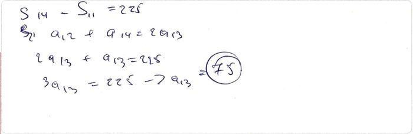Meyar:Cavab:
Həlli:
I üsul:
olduğundan, olur.
Digər tərəfdən, ədədi silsilənin xassəsinə görə, olduğundan, alarıq.
Qeyd 1: Həllin davamı belə yazıla bilər: olduğundan, .
Qeyd 2: Həllin davamı belə də yazıla bilər: .II üsul:
Meyar:
1 bal a. Həll üsulu yazılmaqla tapşırığın doğru cavabı tapılıb; 1/2 bal b. Həll üsulu düzgün yazılıb, lakin hesablama zamanı mexaniki səhvə yol verilərək səhv cavab tapılıb;
c. I üsulda bərabərliyi alınıb, lakin həll davam etdirilməyib və ya səhv davam etdirilib;
d. II üsulda və üçün ifadələr doğru yazılıb, lakin alınan tənlik səhv həll olunub və ya həll olunmayıb;0 bal e. a-d bəndlərində sadalanan hallardan başqa digər bütün hallar (eyni zamanda cavablar hesablanma aparılmadan qeyd olunub). Qiymətləndirmə: 1При каком значении параметра для корней и уравнения выполняется равенство ?
Verilmiş Cavab:Meyar:Cavab:
Həlli:
Viyet teoreminə görə, olar.Buradan da, alınar.
Meyar:
1 bal a. Həll üsulu yazılmaqla tapşırığın doğru cavabı tapılıb; 1/2 bal b. Viyet teoremi düzgün tətbiq olunaraq bərabərliyindən doğru tənlik alınıb, lakin səhv həll olunub və ya həll olunmayıb;
c. Viyet teoreminin tətbiqində səhvə yol verilib (məsələn, yazılıb), lakin alınmış tənlik doğru həll olunub;
d. Səhvən tənliyi alınıb, lakin bu tənlik doğru həll olunaraq cavabı alınıb;0 bal e. a-d bəndlərində sadalanan hallardan başqa digər bütün hallar (eyni zamanda cavablar hesablanma aparılmadan qeyd olunub). Qiymətləndirmə: 0На графике показана зависимость между числом работников одинаковой квалификации и временем, необходимым им для выполнения одной и той же работы. Сколько дней потребуется 16 работникам для выполнения той же работы?
![]() Verilmiş Cavab:Meyar:
Verilmiş Cavab:Meyar:Cavab:
Həlli:
Qrafikə görə işçi işi , işçi isə günə yerinə yetirir. Onda tərs mütənasib asılılığa əsasən yaza bilərik. Buradan,olar.
nəfər bu işi günə yerinə yetirirsə, onda işçi bu işi günə yerinə yetirərlər.
Meyar:
1 bal a. Həll üsulu yazılmaqla tapşırığın doğru cavabı tapılıb. 1/2 bal b. -in qiyməti düzgün yazılıb (burada də tapıla bilər), lakin 16 işçinin həmin işi neçə günə yerinə yetirməsi tapılmayıb və ya səhv tapılıb;
c. -in qiymətinin tapılmasında səhvə yol verilib, lakin buna uyğun olaraq həll prosesi sona qədər düzgün davam etdirilib;0 bal d. a-c bəndlərində sadalanan hallardan başqa digər bütün hallar (eyni zamanda cavablar hesablanma aparılmadan qeyd olunub). Qiymətləndirmə: 0Найдите уравнение окружности, которая пересекает оси координат в точках , и .
![]() Verilmiş Cavab:
Verilmiş Cavab:
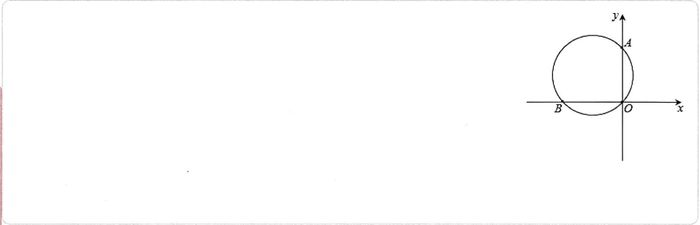Meyar:Cavab:
Həlli:
I üsul:
Tapşırığın şərtindən göründüyü kimi, üçbucağı düzbucaqlı üçbucaq, isə onun hipotenuzudur.
Çevrənin mərkəzi hipotenuzun orta nöqtəsi olduğundan, onun koordinatları olar.
Çevrənin radiusu olduğundan, olar.
Onda, çevrənin tənliyi və ya olur.![]()
II üsul:
Çevrənin tənliyi olduğundan və bu çevrə , və nöqtələrindən keçdiyindən yaza bilərik:
(1)
(2)
(3)
(2) tənliyini (1) və (3) tənliklərində nəzərə alsaq, alarıq:
və üçün alınan qiymətləri (2) tənliyində yazaq:
Onda, çevrənin tənliyi və ya olur.Meyar:
1 bal a. Həll üsulu yazılmaqla tapşırığın doğru cavabı tapılıb. 2/3 bal b. Çevrənin mərkəzinin koordinatları və radiusu (burada diametri də tapıla bilər, yəni yazılıb) doğru yazılıb, lakin çevrənin tənliyi yazılmayıb və ya səhv yazılıb;
c. Çevrənin mərkəzinin koordinatlarının tapılmasında səhvə yol verilib (məsələn, yazılıb) və buna uyğun olaraq həll prosesi sona qədər düzgün davam etdirilib;
d. Çevrənin mərkəzinin koordinatları düzgün yazılıb, lakin radiusun ( və ya diametrin) tapılmasında mexaniki səhvə yol verilib, bununla belə alınan nəticəyə görə çevrənin tənliyi düzgün yazılıb;
e. Çevrənin mərkəzinin koordinatları birbaşa (yəni, heç bir izah verilməyib və ya şəkil üzərində olduğu qeyd edilməyib) yazılıb, lakin həll prosesi sona qədər düzgün davam etdirilib (b bəndindən fərqləndirməli!);
f. Çevrənin mərkəzinin koordinatları düzgün yazılıb, lakin radiusun qiyməti tapılmadan yazılıb;
g. Çevrənin radiusu düzgün yazılıb, lakin mərkəzi tapılmadan yazılıb;1/3 bal h. Çevrənin yalnız radiusu və ya mərkəzi () tapılıb (ikisindən biri), lakin həllin davamı yazılmayıb və ya tamamilə yanlışdır;
i. Çevrənin həm radiusunun, həm də mərkəzinin tapılmasında mexaniki səhvə yol verilib (məsələn, radius əvəzinə diametr, əvəzinə yazılıb) tapılıb, lakin buna uyğun olaraq həll prosesi sona qədər düzgün davam etdirilib;0 bal j. a-i bəndlərində sadalanan hallardan başqa digər bütün hallar (eyni zamanda cavablar hesablanma aparılmadan qeyd olunub). Qiymətləndirmə: 0В окружности с диаметром найдите длину , если , и .
![]() Verilmiş Cavab:
Verilmiş Cavab:
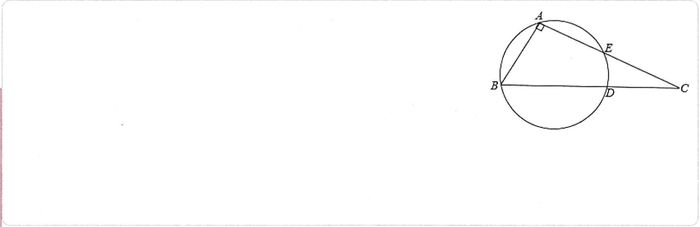Meyar:Cavab:
Həlli:
![]()
və nöqtələrini birləşdirdikdə alınan üçbucağı bərabəryanlı düzbucaqlı üçbucaq, tərəfi çevrənin diametri olur.
Pifaqor teoreminə əsasən, (və ya ).
Onda, olar. düzbucaqlı üçbucağından alınır.Meyar:
1 bal a. Həll üsulu yazılmaqla tapşırığın doğru cavabı tapılıb; 2/3 bal b. və tərəfləri doğru tapılıb, lakin tərəfi səhv tapılıb və ya həllin davamı yoxdur;
c. tərəfinin tapılmasında mexaniki səhvə yol verilib, lakin alınmış qiymətə görə və tərəfləri doğru tapılıb;1/3 bal d. tərəfi doğru tapılıb, lakin həllin davamı yoxdur; 0 bal e. a-d bəndlərində sadalanan hallardan başqa digər bütün hallar (eyni zamanda cavablar hesablanma aparılmadan qeyd olunub). Qiymətləndirmə: 0Если цена одного метра продаваемой ткани будет 30 манатов, прибыль составит 24 маната, а если 25 манатов, то убыток составит 16 манатов. Сколько метров ткани было выставлено на продажу?
Verilmiş Cavab:Meyar:Cavab: metr
Həlli:
I üsul:
Satışa çıxarılan parçanın uzunluğu metr, maya dəyəri manat olarsa, şərtə görə tənliklər sistemi alınar.
Bu iki tənliyi tərəf-tərəfə topladıqda , buradan da alınır.II üsul:
Satışa çıxarılan parçanın uzunluğu metr olsun. Onda, tapşırığın şərtinə görə, bu parçanın maya dəyəri -ə və ya -ya bərabər olar.
Buradan alınır.III üsul:
Parçanın qiymətinin manat azaldılması onun satış dəyərinin manat (və ya manat) azalmasına səbəb olduğundan, satışa çıxarılan parçanın uzunluğu metr olar.Meyar:
1 bal a. Həll üsulu yazılmaqla tapşırığın doğru cavabı tapılıb. 1/2 bal b. Məsələnin şərtinə uyğun tənliklər sistemi (I üsul) düzgün yazılıb, lakin həlli zamanı mexaniki səhvə yol verilərək cavab səhv tapılıb;
c. Səhvən şəklində tənliklər sistemi (I üsul) qurulub və nəticədə metr cavabı alınıb;
d. Məsələnin şərtinə uyğun tənlik (II üsul) düzgün yazılıb, lakin həlli zamanı mexaniki səhvə yol verilərək cavab səhv tapılıb;e. Səhvən şəklində tənlik (II üsul) qurulub və nəticədə metr cavabı alınıb;
f. III üsulda metr yazılıb, lakin və ədədlərinin alınması və ya nəyi ifadə etməsi təqdim olunmayıb;
g. III üsulda səhvən metr yazılıb və nəticədə metr cavabı alınıb;0 bal h. a-g bəndlərində sadalanan hallardan başqa digər bütün hallar (eyni zamanda cavablar hesablanma aparılmadan qeyd olunub). Qiymətləndirmə: 0Эмиль построил правильный многоугольник с помощью оснований равнобедренных треугольников с углом при вершине . На рисунке показана часть этого правильного многоугольника. Сколько всего сторон у многоугольника, построенного Эмилем?
![]() Verilmiş Cavab:
Verilmiş Cavab:
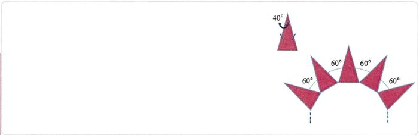Meyar:Cavab: 18
Həlli:
I üsul:
Təpə bucağı olan bərabəryanlı üçbucağın oturacağına bitişik bucağı olar.
Onda, çoxbucaqlının bir daxili bucağı , bir xarici bucağı isə olar.
Buradan da, çoxbucaqlının tərəflərinin sayını alarıq.II üsul:
Təpə bucağı olan bərabəryanlı üçbucağın digər iki bucağının cəmi olar.
Onda, çoxbucaqlının bir daxili bucağı olar.
Digər tərəfdən, düzgün -bucaqlının bir daxili bucağı -ə bərabər olduğundan, alarıq. Buradan da, alınır.Meyar:
1 bal a. Həll üsulu yazılmaqla tapşırığın doğru cavabı tapılıb; 2/3 bal b. Verilmiş bərabəryanlı üçbucağın oturacağına bitişik bucağı (və ya oturacağına bitişik bucaqlarının cəmi) və çoxbucaqlının bir təpədəki daxili bucağı doğru tapılıb, lakin tərəflərinin sayı tapılmayıb və ya səhv tapılıb;
c. Verilmiş bərabəryanlı üçbucağın oturacağına bitişik bucağı (və ya oturacağına bitişik bucaqlarının cəmi) doğru tapılıb, lakin çoxbucaqlının bir təpədəki daxili bucağının tapılmasında səhvə yol verilib, bununla belə alınan bucağa görə çoxbucaqlının tərəflərinin sayı doğru tapılıb;
Qeyd: Alınan bucağa görə çoxbucaqlının tərəflərinin sayı natural ədəd alınmadıqda, belə çoxbucaqlının olmadığı yazılmalıdır, əks halda təqdim olunan həll 1/3 balla qiymətləndirilir.
d. Verilmiş bərabəryanlı üçbucağın oturacağına bitişik bucağının tapılmasında mexaniki səhvə yol verilib (məsələn, yazılıb), lakin buna uyğun olaraq çoxbucaqlının bir təpədəki daxili bucağı və onun tərəflərinin sayı doğru tapılıb;1/3 bal e. Verilmiş bərabəryanlı üçbucağın oturacağına bitişik bucağı (və ya oturacağına bitişik bucaqlarının cəmi) doğru tapılıb, lakin həm çoxbucaqlının bir təpədəki daxili bucağının, həm də alınan bucağa görə çoxbucaqlının tərəflərinin sayının tapılmasında səhvə yol verilib və ya həllin davamı yoxdur;
f. Verilmiş bərabəryanlı üçbucağın oturacağına bitişik bucağının tapılmasında mexaniki səhvə yol verilib (məsələn, yazılıb), lakin buna uyğun olaraq çoxbucaqlının bir təpədəki daxili bucağı tapılıb, bununla belə alınan bucağa görə çoxbucaqlının tərəflərinin sayının tapılmasında səhvə yol verilib və ya həllin davamı yoxdur;0 bal g. a-f bəndlərində sadalanan hallardan başqa digər bütün hallar (eyni zamanda cavablar hesablanma aparılmadan qeyd olunub). Qiymətləndirmə: 0
Английский язык (Maksimum: 100)
Doğru cavabların sayı: 17Yanlış cavabların sayı: 12Nəticə: 55.8Choose the line of nouns.
Verilmiş Cavab:examiner, tourist, scissors, village
Doğru cavab:examiner, tourist, scissors, village
Choose the correct option.
Verilmiş Cavab:a pair of woolen socks
Doğru cavab:a pair of woolen socks
Choose the correct variant.
They finally found ... apartment with ... advanced heating system that works perfectly.
Verilmiş Cavab:an, an
Doğru cavab:an, an
Choose the correct sentences.
1. Susan doesn’t have to come to the office, she can work from home.
2. Fred have to wear a helmet when he ride a motobike.
3. Several fish were damaged in the nets.
4. The goose’s feathers was floating in the pond.
5. Both the magazine and the papers are in the drawer.Verilmiş Cavab:1, 3, 5
Doğru cavab:1, 3, 5
Choose the correct variant.
Sometimes … good conversation can change … person’s mood.
Verilmiş Cavab:–, an
Doğru cavab:a, a
Choose the correct variant.
There were a lot of guests at the party, … were talking but … was eating.
Verilmiş Cavab:everyone, some
Doğru cavab:all, nobody
Choose the correct variant.
You have a better result this time. There are … mistakes in your test.
Verilmiş Cavab:only few
Doğru cavab:fewer
Choose the correct degree of the adjective.
The nature in Azerbaijan is … in Sweden.
1. as magnificent as
2. so magnificent as
3. enough magnificent than
4. magnificent than
5. more magnificent thanVerilmiş Cavab:3, 5
Doğru cavab:1, 5
Choose the correct answer.
Nick smiled ..., trying to hide his anger.
Verilmiş Cavab:calmly
Doğru cavab:calmly
Choose the correct sentences with the noun in the Possessive Case.
1. Lisa’s and Tom's jacket suited both of them.
2. Sophia's preparing for her exams now.
3. Tom's answer helped solve the problem.
4. Daniel's new shoes are very expensive.Verilmiş Cavab:1, 2
Doğru cavab:3, 4
Choose the correct sentences.
1. There was no fire fighters at the emergency.
2. The noise from the engines was unbearable.
3. A few slices of cake were left on the plate.
4. The delay in flight schedules were disappointing.Verilmiş Cavab:3, 4
Doğru cavab:2, 3
Match the words to their definitions.
1. curiosity
2. consultation
3. innovationa. a meeting to discuss something or get advice
b. a new idea or method
c. a strong desire to know or learn somethingVerilmiş Cavab:1-a, 2-b, 3-c
Doğru cavab:1-c, 2-a, 3-b
Choose the correct pronouns.
– How do you rate … children's performances?
– All of … were wonderful and creative.Verilmiş Cavab:these, they
Doğru cavab:these, them
Choose the correct answer.
Sara … after little Nick while Mary … dinner.
Verilmiş Cavab:was looking, was making
Doğru cavab:was looking, was making
Choose the line of adjectives.
Verilmiş Cavab:alive, crucial, casual
Doğru cavab:alive, crucial, casual
Choose the correct tense forms.
The chief … the articles before he ... them.
Verilmiş Cavab:has checked, published
Doğru cavab:will check, publishes
Read the passage and answer the questions.
1. Sattar Bahlulzadeh was a prominent Azerbaijani artist and one of the most important figures in modern Azerbaijani art. From a young age, he showed a great interest in drawing and painting. He began his art education at the Azerbaijan State Art School and later continued his studies in Moscow in 1933. Bahlulzadeh’s main focus was landscape painting, and he is considered the founder of modern landscape painting in Azerbaijan.
2. In the early years, Bahlulzadeh painted nature in a realistic style, following traditional techniques. However, over time, he developed his own expressive and emotional style. Some of his artworks are so imaginative and detailed that they remind viewers of photos of the Earth taken from space. By using a combination of pale colours and strong brushwork, he managed to make nature appear even more vivid and magical than in reality. His paintings often reflect the beauty of Azerbaijan’s mountains, rivers, and villages. One of his most famous works is "Gudialchay Valley", which is loved for its colour and energy.
3. Throughout his career, Sattar Bahlulzadeh received many awards and held exhibitions in different countries, including the USA, the UK, Turkey, and Russia. Today, his legacy continues to inspire young artists.The passage is mainly about … .
Verilmiş Cavab:a highly gifted artist
Doğru cavab:a highly gifted artist
Complete the sentence according to the passage.
He used soft colours and strong painting lines to make … .
1. nature look even more bright
2. his paintings resemble photos of the Earth
3. nature look more beautiful than it is in real life
4. his paintings look less wonderful than it is in realityVerilmiş Cavab:1, 3
Doğru cavab:1, 3
Which statement is false according to the passage?
Verilmiş Cavab:Bahlulzadeh was the creator of the traditional techniques.
Doğru cavab:Bahlulzadeh was the creator of the traditional techniques.
Choose the correct answer to the question according to the passage.
What did Sattar Bahlulzadeh do during his creative career?
1. He developed his own unique artistic style.
2. He won many prizes for his artwork.
3. He left behind a legacy that has no impact on young artists.
4. He became known as an outstanding reporter.
5. He painted his pictures in such a way that they looked like they were taken from space.Verilmiş Cavab:1, 2, 5
Doğru cavab:1, 2, 5
Write the synonym of the word "profession" from paragraph 3.
Verilmiş Cavab: Meyar:
Meyar:Cavab: career
Meyar:
1 bal a. "career" sözü yazılıb;
b. "career" sözü cümlə daxilində fərqləndirilib (mötərizəyə alınıb, altından xətt çəkilib, kənarda yazılıb və s.);1/2 bal c. Sözün yazılışında 1 hərf səhvinə yol verilib (yeni məna kəsb edən söz yaranmayıb);
d. Düzgün sözlə yanaşı, 1 yanlış söz yazılıb;0 bal e. Sözün yazılışında 2 və daha çox hərf səhvinə yol verilib;
f. Düzgün sözlə yanaşı, 2 və daha artıq yanlış söz yazılıb;
g. "career" sözü cümlə daxilində fərqləndirilməyib;
h. Digər bütün hallardaQiymətləndirmə: 1Complete the sentence by changing at least 2 words according to the passage.
Bahlulzadeh’s main focus was landscape painting, and he is … .
Verilmiş Cavab:
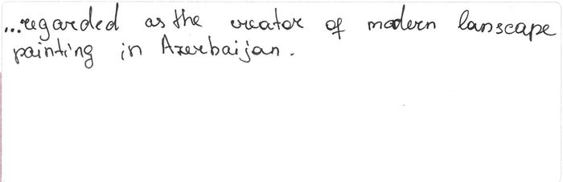Meyar:Cavab: he is regarded as the creator of contemporary scenery artwork in Azerbaijan
Meyar:
1 bal a. Cümlə ən azı iki söz dəyişdirilməklə düzgün tamamlanıb (cümlə leksik və qrammatik cəhətdən düzgün tamamlanıb, yanlış yoxdur).
- thought (of) the creator of modern landscape painting in Azerbaijan.
- regarded (as) the orginator of present-day landscape painting in Azerbaijan.
- seen (as) the initiator of modern landscape painting in Azerbaijan-recognized (as) the pioneer of modern landscape painting in Azerbaijan.
- known (as) the founder of contemporary landscape painting in Azerbaijan.
- known (as) the founder of current landscape painting in Azerbaijan.
- known (as) the founder of modern scenery painting in Azerbaijan.
- known (as) the founder of modern nature painting in Azerbaijan.
- known (as) the founder of modern landscape artwork in Azerbaijan.
- known (as) the founder of modern landscape picture in Azerbaijan.
- known (as) the founder of modern landscape illustration in Azerbaijan.Qeyd 1: Hərf səhvi nəticəsində yeni məna kəsb edən söz yaranmırsa, cavab qəbul edilir.
1/2 bal b. Cümlə ən azı bir söz dəyişdirilməklə düzgün tamamlanıb, yanlış yoxdur;
- known (as) the founder of modern landscape painting in Azerbaijan.
- regarded (as) the founder of modern landscape painting in Azerbaijan.
- seen (as) the founder of modern landscape painting in Azerbaijan.
- considered the creator of modern landscape painting in Azerbaijan.
- considered the originator of modern landscape painting in Azerbaijan.
- considered the initiator of modern landscape painting in Azerbaijan.
- considered the pioneer of modern landscape painting in Azerbaijan.
- considered the founder of contemporary landscape painting in Azerbaijan.
- considered the founder of current landscape painting in Azerbaijan.
- considered the founder of present-day landscape painting in Azerbaijan.
- considered the founder of modern scenery painting in Azerbaijan.
- considered the founder of modern nature painting in Azerbaijan.
- considered the founder of modern landscape artwork in Azerbaijan.
- considered the founder of modern landscape picture in Azerbaijan.
- considered the founder of modern landscape illustartion in Azerbaijan.c. Cümlədə ən azı iki söz dəyişdirilib, lakin yanlış bir fikir (söz və ya qrammatik səhv) də qeyd olunub;
- considered the create of contemporary landscape painting in Azerbaijan.
d. Mətndəki sözlər olduğu kimi qalıb, yalnız struktur dəyişdirilib;
0 bal e. Cavab söz dəyişmədən yazılıb;
- ... -considered the founder of modern landscape painting in Azerbaijan.
f. Bir söz dəyişikliyi edilib, lakin cümlə tamamlanmayıb;
g. Yanlız bir söz dəyişdirilib, lakin yanlış bir fikir (söz və qrammatik səhvlər) də qeyd olunub;
h. Struktur və ya söz dəyişikliyi edilib, amma etdiyi leksik və qrammatik dəyişikliklər (səhvlər) nəticəsində cümlə mənasını itirib;
i. Digər bütün hallardaQiymətləndirmə: 1Which word from paragraph 3 best fits the following definition "to give somebody the desire or confidence to do something well"?
Verilmiş Cavab:
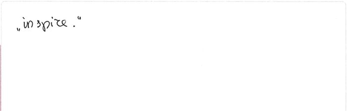Meyar:Cavab: to inspire
Meyar:
1 bal a. "to inspire" sözü yazılıb;
b. "to inspire" sözü cümlə daxilində fərqləndirilib (mötərizəyə alınıb, altından xətt çəkilib, kənarda yazılıb və s.);1/2 bal c. Sözün yazılışında 1 hərf səhvinə yol verilib; (yeni məna kəsb edən söz yaranmayıb)
d. Düzgün sözlə yanaşı, 1 yanlış söz yazılıb;0 bal e. Sözün yazılışında 2 və daha çox hərf səhvinə yol verilib;
f. Düzgün sözlə yanaşı, 2 və daha artıq yanlış söz yazılıb;
g. "to inspire" sözü cümlə daxilində fərqləndirilməyib;
h. Digər bütün hallardaQiymətləndirmə: 1Write the answer to the question by expressing your opinion. Write at least 3 sentences.
Which of the well-known Azerbaijani figures, such as writers, artists or scientists, would you like to write about?
Verilmiş Cavab: Meyar:
Meyar:Cavab: 1. One of the prominent people in Azerbaijan is Uzeyir Hajibeyov, a famous composer and musicologist. He is best known for creating the first opera in the Islamic world, called "Leyli and Majnun" Hajibeyov played a big role in developing classical music in Azerbaijan by blending traditional mugham with Western styles. His legacy still inspires many musicians in the country today.
2. Nizami Ganjavi was one of the most prominent poets of medieval Azerbaijan. He is best known for his powerful and beautiful poems written in Persian, especially his famous "Khamsa" (Five Poems). His works focused on themes like love, justice, wisdom, and human values. Nizami’s legacy has had a great influence on the literature of the East and is still celebrated today.Meyar:
1 bal a. Cavab ən azı 3 cümlə ilə düzgün yazılıb.
- birləşdirici vasitələrin köməyilə fikirlərini əlaqəli və ardıcıl şəkildə ifadə edir; fikirlər arasında məntiqi rabitə vardır.
- müxtəlif qrammatik forma və strukturlardan (sadə və mürəkkəb cümlələr) düzgün və yerində istifadə edir, zaman uzlaşmasını gözləyir;
-mövzuya uyğun söz və söz birləşmələrini yerində və düzgün şəkildə işlədir;b. Edilən leksik və qrammatik səhvlərin sayı 1-2-dir;
2/3 bal c. Cavab 2 cümlə ilə düzgün yazılıb;
Cavab 2 cümlə ilə düzgün yazılıb (3-4 cümlədən ən az ikisi düzgündür);
Düzgün cavabla yanaşı bir yanlış cavab da qeyd olunub;
- fikirlər arasında əlaqə pozulmuşdur; fikirlər əsasən durğu işarələrinin (vergül) köməyilə ayrılır və ya birləşir; zaman uzlaşmasını gözləyir;
- çox sadə qrammatik strukturlardan istifadə edir;
- söz bazası tapşırığı yerinə yetirməyə mane olur;d. Edilən leksik və qrammatik səhvlərin sayı sayı 3-4-dür;
1/3 bal e. Cavab 1 cümlə ilə düzgün yazılıb, yanlış yoxdur;
f. Yazılan cümlələrdən yalnız biri mövzuya uyğun gəlir (digər cümlələr mövzuya uyğun deyil və məna ifadə etmir.);
g. Mətndəki cümlələrdəki fikirlər parafraz edilərək yazılıb, yeni fikir yoxdur;
h. Edilən leksik və qrammatik səhvlərin sayı 5-6-dır;0 bal
i. Cavab mətndən müəyyən cümlələr köçürülərək yazılıb;
qısa, şablon və ya yarımçıq cümlələr qurur;
- cavab tamamilə yarımçıq cümlələrdən ibarətdir, anlaşılan deyil (söz yığınından ibarətdir);
- leksik və qrammatik səhvlərə görə cümlə mənasını itirib;j. Cavab yalnız 1 cümlə ilə yazılıb, lakin yanlış bir fikir (söz və kobud qrammatik səhvlər) də qeyd olunub;
k. Yazı işi məzmun cəhətdən tapşırığın şərtini ödəmir (başqa mövzu haqqında yazılıb);
m. Digər bütün hallardaQiymətləndirmə: 1/3Listen to the passage and answer the questions.
The passage is mainly about ... .
Verilmiş Cavab:an artist who learned to draw by attending school
Doğru cavab:a man who creates paintings while he sleeps
Complete the sentence according to the passage.
Some people think that ... .
Verilmiş Cavab:Lee Hadwin studied art at school and learned many skills
Doğru cavab:Lee Hadwin’s art comes from the part of the brain that we don’t control
Which statement is false according to the passage?
Verilmiş Cavab:Scientists understand why Lee can draw in his sleep.
Doğru cavab:Scientists understand why Lee can draw in his sleep.
Complete the sentence according to the passage.
To make art, Lee Hadwin uses … .
Verilmiş Cavab:
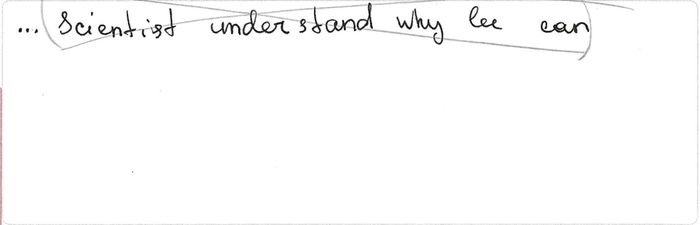Meyar:Cavab: pencils, pens and (sometimes) coffee
1 bal a. Cavab düzgün yazılıb: "pencils, pens and (sometimes) coffee";
b. Verilmiş 3 sözdən ən azı ikisi yazılmışdır;
- pencils, pens
- pens, sometimes coffee
- pencils and coffee1/2 bal c.1 ballıq cavab ilə yanaşı, ən az bir yanlış yazılıb və ya kobud qrammatik səhv nəticəsində məna qismən təhrif edilib;
d. 3 sözdən istənilən ikisi ilə yanaşı bir yanlış cavab qeyd edilib;
e. "pencils\ pens\ coffee" sözlərindən istənilən biri yazılıb, yanlış cavab yazılmayıb;0 bal f. "pencils\ pens\ coffee" sözlərindən istənilən biri ilə yanaşı, yanlış cavab yazılıb və ya kobud qrammatik səhvə (söz sırası pozulub, sözönü yanlış yazılıb və s.) yol verilib;
g. 1/2 ballıq cavablardan biri ilə yanaşı, ən az bir yanlış fikir yazılıb. Yol verilən qrammatik və orfoqrafik səhvlər nəticəsində fikir anlaşılmır və ya məna təhrif olunur;
i. Digər bütün hallardaQiymətləndirmə: 0Write the correct answer to the question according to the passage.
When did Lee start drawing in his sleep?
Verilmiş Cavab:
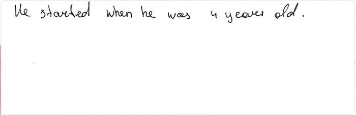Meyar:Cavab:
1. When he was four (4)
2. At the age of 4 (four)
Meyar:1 bal a. Cavab düzgün yazılıb;
- when he was four
- at the age of four1/2 bal b. 1 ballıq cavab ilə yanaşı, ən az bir yanlış yazılıb və ya kobud qrammatik səhv nəticəsində məna qismən təhrif edilib; 0 bal c. Yanlız "four" yazılıb;
d. Yol verilən qrammatik və orfoqrafik səhvlər nəticəsində fikir anlaşılmır və ya məna təhrif olunur;
e. Digər bütün hallardaQiymətləndirmə: 1Write one adjective from the passage that describes the noun phrase "lines or shapes".
Verilmiş Cavab: Meyar:
Meyar:Cavab: simple
Meyar:
1 bal
a. - "simple(lines)" yazılıb;
- "simple" sözü cümlə daxilində fərqləndirilib (mötərizəyə alınıb, altından xətt
çəkilib, kənarda yazılıb və s.)
b. Sözün yazılışında 1 hərf səhvi edilib;1/2 bal c. Düzgün söz ilə yanaşı, 1 yanlış söz yazılıb;
d. Sözün yazılışında 2 hərf səhvi edilib;0 bal e. Yol verilən orfoqrafik səhv(lər) nəticəsində yeni məna kəsb edən söz yaranıb
(sample və s.);
f. Düzgün söz ilə yanaşı 2 və daha artıq yanlış söz yazılıb;
g. "simple" sözü cümlə daxilində fərqləndirilməyib;
h. Digər bütün hallardaQiymətləndirmə: 0
![]()
![]()
![]()